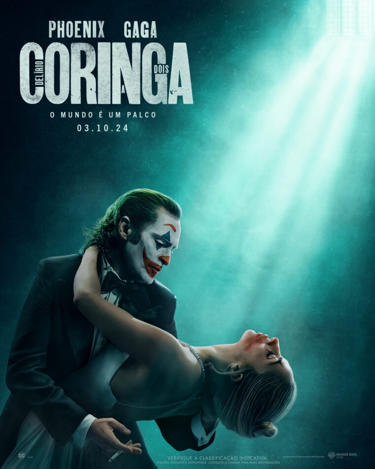

Rambo
classificação: 18 anos categoria: ação/aventura duração: 2h 30m

Coringa: Delírio a Dois
classificação: 16 anos categoria: Musical/Thriller duração: 2h 19m

Deadpool & Wolverine
classificação: 18 anos categoria: Ação/Comédia duração: 2h 7m

Sorria 2
classificação: 18 anos categoria: Terror/Mistério duração: 2h 12m